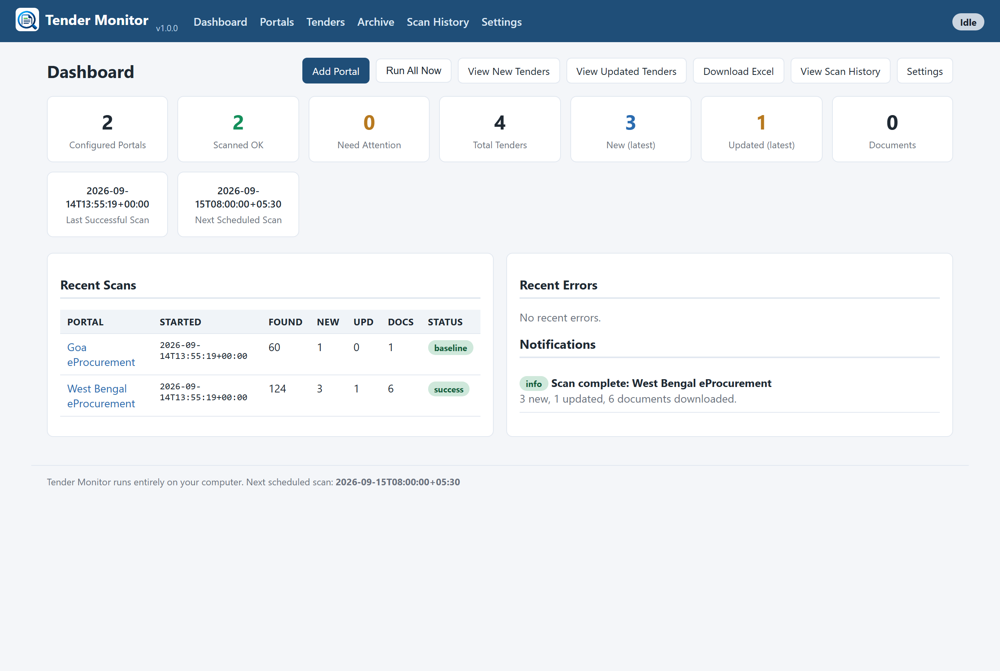
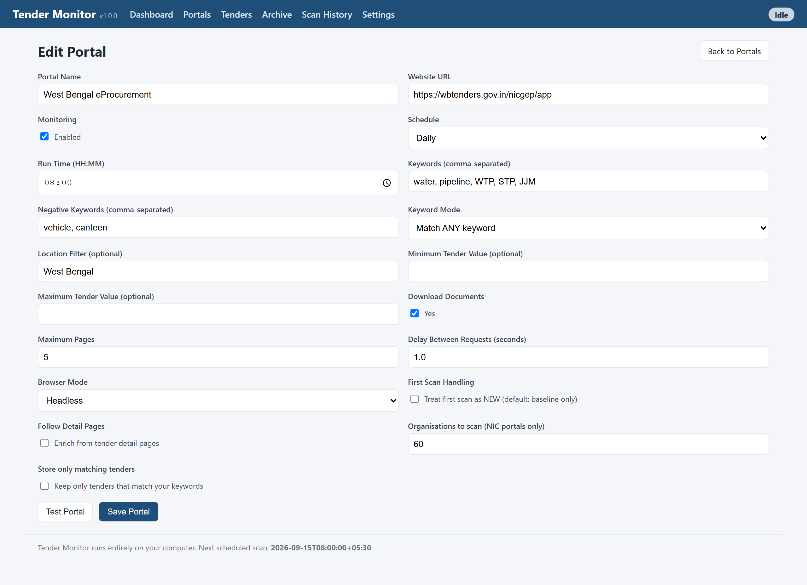
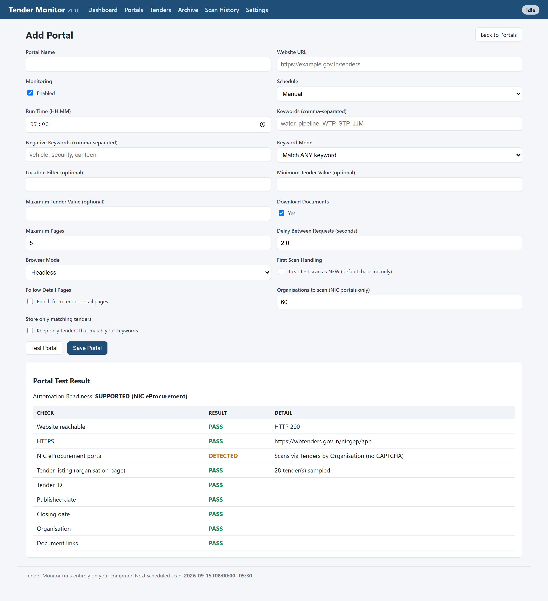
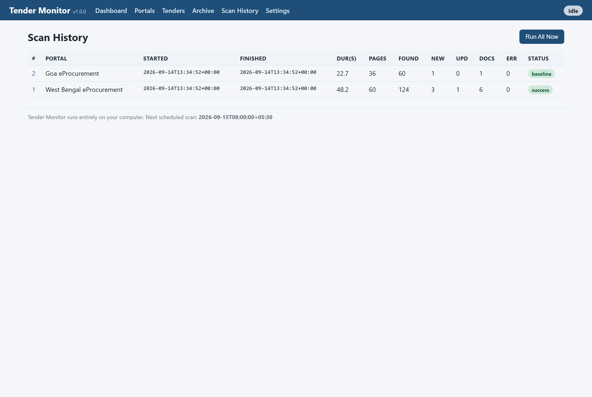
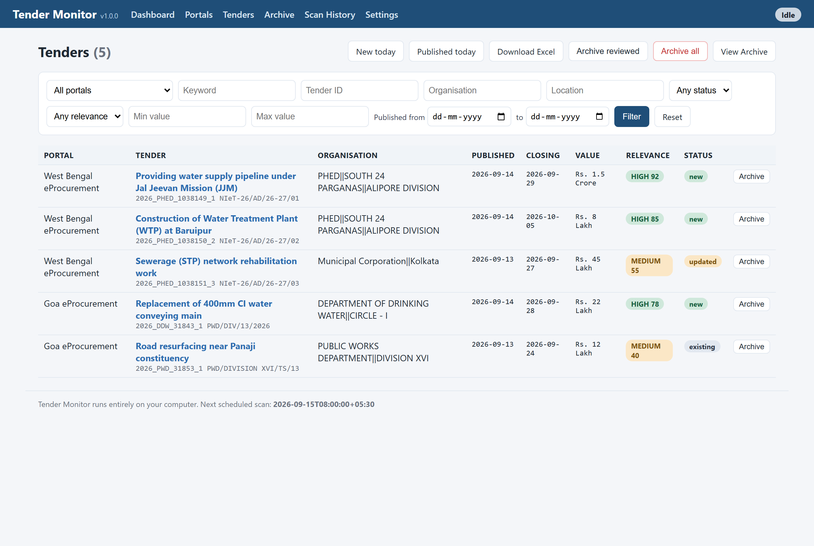
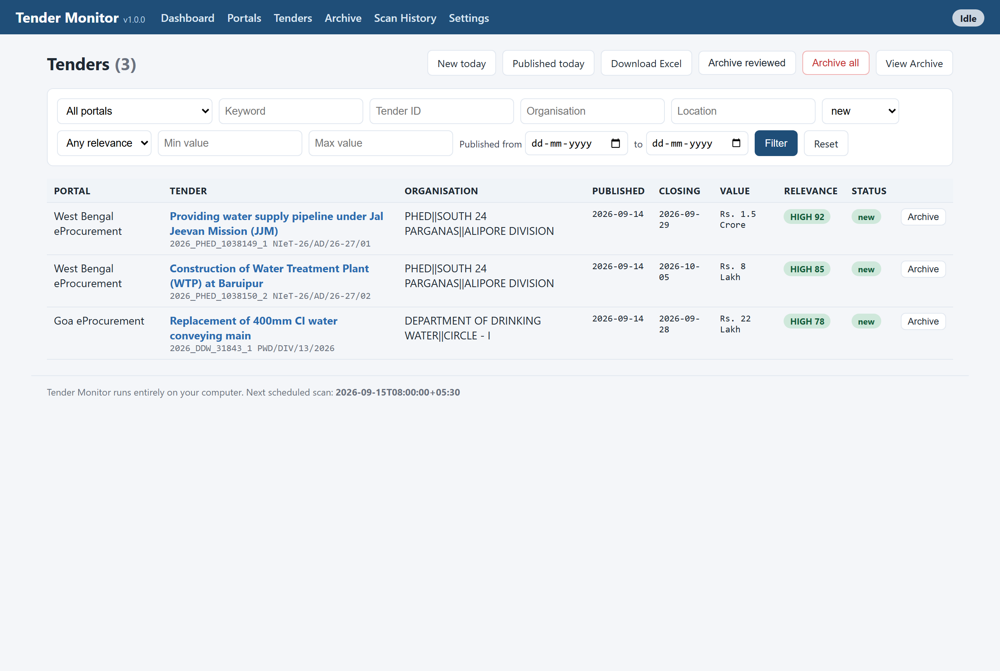
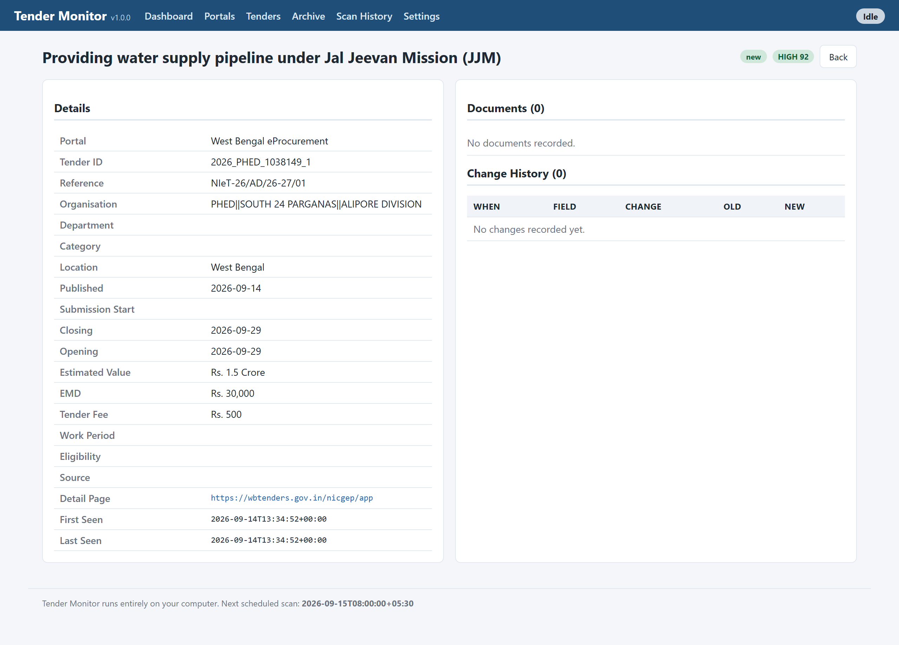
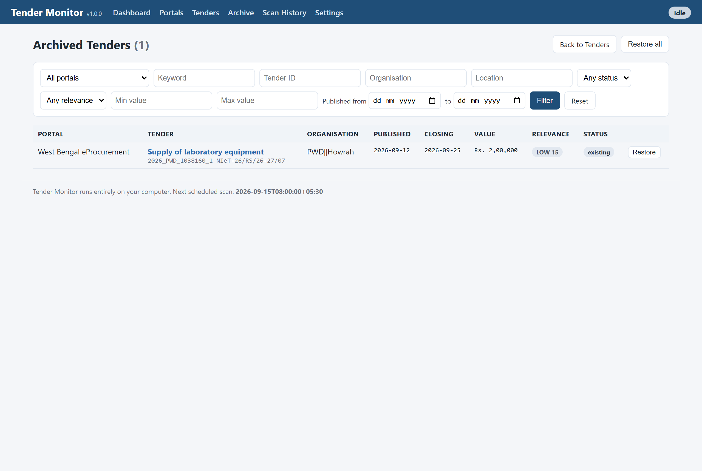
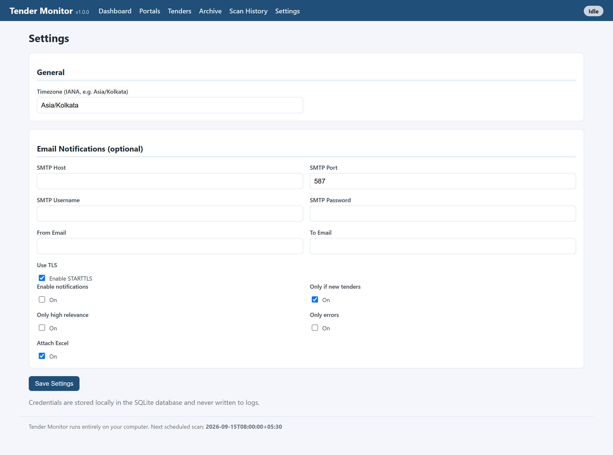

Tender Monitor is a small application that runs on your own Windows computer and watches government e-procurement / tender websites for you. You tell it which websites to watch and what words you care about (for example water, pipeline, WTP, STP); it visits those sites on a schedule, finds the tenders, and tells you which ones are new or changed since last time.
It can:
http://127.0.0.1:8000, which is just your own machine.Open the Start menu, type cmd, open Command Prompt, type this and press Enter:
If it shows Python 3.12 (or higher), you are ready. If it says Python is
not found, install it first:
You should have a folder for the app, for example D:\Tender Monitor, containing
files such as install.bat and start.bat.

The Dashboard - your home screen. This is what opens when you start the app.
The Dashboard gives you the big picture at a glance:
The buttons at the top - Add Portal, Run All Now, View New Tenders, Download Excel, View Scan History, Settings - are shortcuts to everything you need. The blue bar at the very top (Dashboard, Portals, Tenders, Archive, Scan History, Settings) is the main menu, always available.
Click Add Portal (top of the Dashboard). Fill in the form and click Save Portal. Below is an example set up to watch water-sector tenders.

The Add Portal form, filled in with an example.
| Field | What to put |
|---|---|
| Portal Name | Any label, e.g. West Bengal eProcurement |
| Website URL | The site address, e.g. https://wbtenders.gov.in/nicgep/app |
| Monitoring | Tick Enabled |
| Schedule | Daily (recommended) or Manual |
| Run Time | When the daily scan runs, e.g. 08:00 |
| Keywords | Words you care about, e.g. water, pipeline, WTP, STP, JJM |
| Negative Keywords | Words to exclude, e.g. vehicle, canteen |
| Keyword Mode | Match ANY keyword (broad) or ALL (strict) |
| Location / Min / Max Value | Optional filters |
| Download Documents | Yes to save PDFs/BOQ for matching tenders |
| Organisations to scan | For NIC portals: how many departments to cover (default 60) |
| Store only matching tenders | Tick to keep only tenders that match your keywords |
| Browser Mode | Leave as Headless |
/nicgep/app) are recognised
automatically. Just paste the site's main address - the app knows how to read
their "Tenders by Organisation" pages.Before saving, click Test Portal. The app opens the website with its built-in browser and checks whether it can read tenders from it. After a few seconds you get a result like this:

A successful Test Portal result for a NIC eProcurement site.
Look at Automation Readiness at the top:
| Result | Meaning |
|---|---|
| SUPPORTED / GOOD | The app can read this site. Save and scan it. |
| SUPPORTED (NIC eProcurement) | Recognised government portal - it will scan via "Tenders by Organisation". |
| PARTIALLY SUPPORTED | Some fields may be missing, but it will still work. |
| CAPTCHA / LOGIN REQUIRED | The site is protected; the app will not (and should not) bypass it. |
| SITE UNAVAILABLE / BLOCKED | The site could not be reached right now - try again later. |
You can scan any time - you do not have to wait for the schedule.
A NIC portal walks through each government department, so the first scan can take a few minutes. Watch progress on the Scan History page.

Scan History - every scan with how many tenders were found, new, updated and downloaded.
Click Tenders in the top menu. This shows the tenders the app has found, with their Published and Closing dates, value, a relevance badge and a status (new / updated / existing).

The Tenders page. Use the filters and the quick-view buttons at the top.
The two most useful buttons, at the top:
You can also filter by portal, keyword, organisation, location, status, relevance and a Published date range. To focus on the best matches, set Relevance = HIGH.

Filtering to only NEW tenders - your daily short-list.
Click any tender's title to see everything about it: full metadata, the source link, downloaded documents, and its change history (for example "CLOSING DATE EXTENDED" with the old and new dates).

A tender's detail page, including documents and change history.
Over time the Tenders list grows. To keep it focused on what is current, move old or already-reviewed tenders to the Archive (nothing is deleted - archived tenders are just hidden from the main list and can be restored any time).
On the Tenders page, three buttons help:
| Button | What it does |
|---|---|
| Archive reviewed | Archives all unchanged tenders, keeps NEW and UPDATED. Best for daily clean-up. |
| Archive all | Moves everything in the active list to the Archive (a full clear). |
| Archive (per row) | Archive one tender using the small button on its row. |
Open the Archive page from the top menu to search old tenders and Restore any of them.

The Archive page - old tenders, searchable, with Restore.
Click Download Excel (on the Dashboard or the Tenders page) to get a full
report file named like Tender_Report_2026-09-14.xlsx. It contains ready-to-use
sheets:
Headers are frozen, filters are on, and links to the tender pages and documents are clickable. Tip: in the NEW TENDERS sheet you can filter the Published column to today's date to see only today's fresh tenders.
There are two ways to run scans automatically:
If a portal's Schedule is Daily (or Weekly), the app scans it at the set time as long as the app window is running. The Dashboard shows the Next Scheduled Scan.
Use Windows Task Scheduler so scans run in the background:
07:00) and press Enter.Open Settings from the top menu.

Settings - timezone and optional email notifications.
Asia/Kolkata unless you are elsewhere. This controls
what "today" means and the times shown.To watch several state portals with the same keywords, set one up, then on the Portals page click Clone. It copies every setting into a new portal and opens it for editing - just change the Name and URL and Save.
Keywords decide what counts as relevant. Use the words that appear in tender
titles, e.g. for water works: water, pipeline, WTP, STP, JJM, sewerage, water treatment.
Add Negative Keywords to remove noise, e.g. vehicle, security, canteen.
| Problem | What to do |
|---|---|
| "Python was not found" during install | Install Python 3.12+ and tick "Add Python to PATH", then run install.bat again. |
The browser page shows {"detail":"Not Found"} after an update | The app needs a restart to load changes. Close the black window (or stop.bat) and run start.bat again. |
| A portal says CAPTCHA REQUIRED / LOGIN REQUIRED | That site is protected and cannot be automated. This is expected for some portals. |
| A site briefly shows an error or "503" | The website is busy or blocking automated visits. Wait a while and scan again. |
| "Archive older/reviewed" seems to do nothing | Check the green message it shows - if everything is from today, there may be nothing unchanged to archive yet. Use "Archive all" to clear fully. |
| Port 8000 already in use | Another copy is running. Close all black windows and start again, or use a different port. |
| Where are my files? | Inside the app folder: data\downloads (documents), data\reports (Excel), data\logs (logs). |
| File | Use |
|---|---|
install.bat | Run once to set everything up. |
start.bat | Start the app (opens the Dashboard in your browser). |
stop.bat | Stop the app. |
run_scan.bat | Run one scan of all portals (used by the daily task). |
setup_scheduler.bat | Set up automatic daily scans in Windows. |
| Address | http://127.0.0.1:8000 (your own computer) |
|---|---|
| Menu | Dashboard · Portals · Tenders · Archive · Scan History · Settings |
| Daily loop | New today → review → Download Excel → Archive reviewed |
Tender Monitor - by Ganguly B (Shavarna) · enlaceet@gmail.com · WhatsApp +91-9073288770
Free and open source (MIT License). Handbook for Version 1.0.